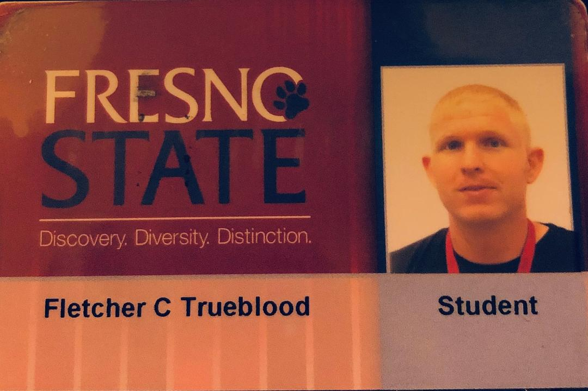

Fletcher Trueblood
1812 East Cambridge Ct. Visalia, California 93291 · (559)730-6611
Ftrueblood@att.net
---------------------------------------------------------------------------------------------------------------------------
Ambitious, determined, and detail-oriented individual with strong object-oriented development skills, experience in Java and C++, seeks challenging junior Java Developer position with a company who can benefit from leadership experience and excellent communication skills.
EXPERIENCE
JUNE 2006 – DECEMBER 2008
GENERAL MANAGER, LITTLE CAESARS PIZZA
• Developed weekly schedule based on sales volume
• Generated weekly food orders for projected sales volume
• Analyzed nightly and weekly inventory audits to control food cost
• Implemented bi-weekly open interviews
• Ranked 6th in sales volume worldwide for 2007
JANUARY 2009 – PRESENT
DISTRICT MANAGER, LITTLE CAESARS PIZZA
• Implemented a projection system to better predict weekly sales
• Trained all new general managers
• Set weekly goals for general managers
• Analyzed all weekly schedules, food orders, and weekly inventories for each general manager
EDUCATION
JUNE 2015
ASSOCIATE OF SCIENCE, COLLEGE OF THE SEQUOIAS
• Major: Computer Science
EXPECTED DECEMBER 2019
BACHELOR OF SCIENCE, FRESNO STATE UNIVERSITY
• Major: Computer Science
• GPA: 3.33
SKILLS
• Experience in: Java, C++, Haskell, HTML, CSS, JavaScript, AJAX, PHP, Python, and mySQL.